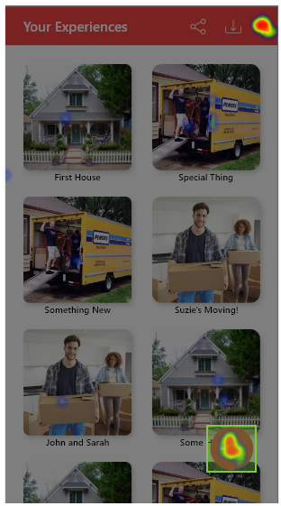
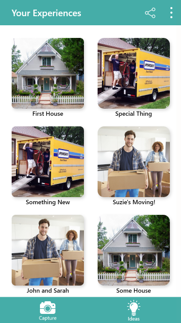
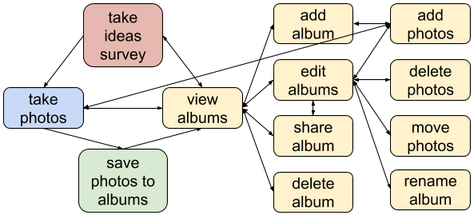
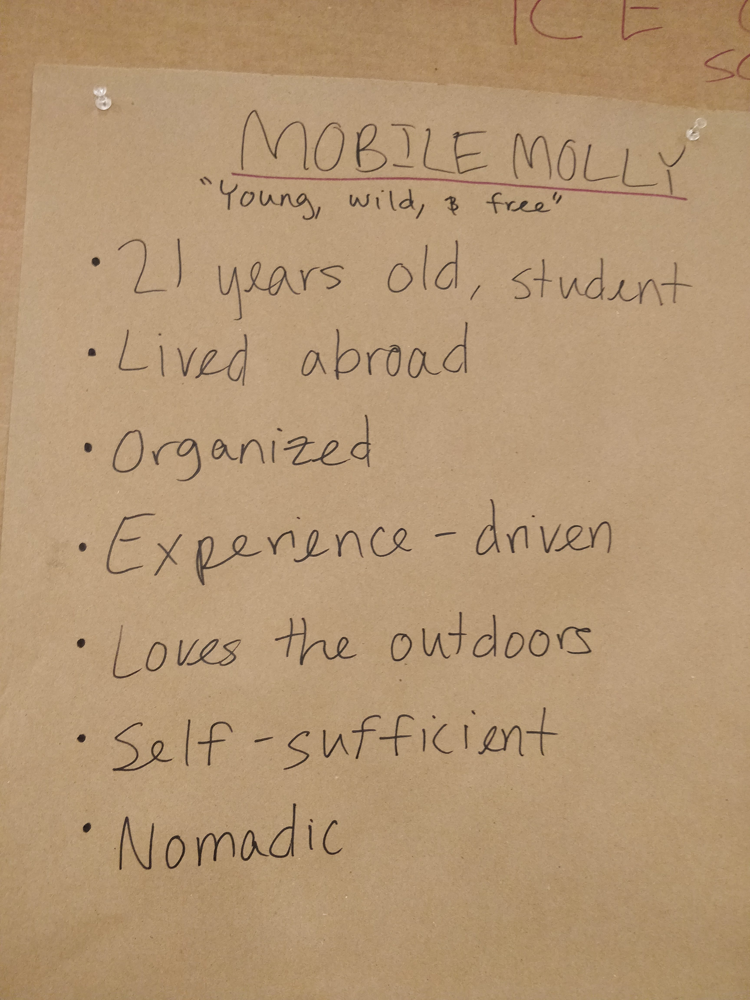

Final Refinement Report
1 Introduction
We entered the final phase of our project with a prototype that already reflected the feedback we had received from our teaching team and peers (in the form of the heuristic evaluation). As a result, we did not make large adjustments to our prototype from the previous phase, but rather we continued to seek feedback on our design through usability studies and make small improvements. Our final design for this project is still an incomplete work, but we are confident that it reflects our users’ needs and lays a solid foundation for any future work.
2 Formal Usability Study
We conducted a formal usability study with two college students to determine whether we should use a Floating Action Button (FAB) for the most important context-dependent actions for applicable screens (like, for example, the albums page but not the camera). Before testing, we determined the goal and parameters of the test as well as wrote a testing script to create consistency between testing sessions, and thus, make it easier to compare results. After we finished testing, we examined the results and identified a few key takeaways.
2.1 Testing Documentation
We created two documents for our formal usability study, a testing plan and a script. The testing plan, laid out our goal, hypothesis, and design. The goal of our study was to “determine whether using a top app bar or a top app bar and FAB combination is preferential for context-dependent actions.” This particular topic was something our team had been divided on in the previous phase, and while we had decided to proceed with a FAB-less design, we believed it was worth revisiting that choice in this final refinement phase. We chose to conduct an A/B test with the existing FAB-less top app bar design as option A and the top app bar and FAB combination as option B. We decided to measure both how our users felt about the two designs as well as how quickly they were able to complete sets of tasks to get qualitative and quantitative feedback.
We also wrote a simple script (at the bottom of the Plan document) to standardize the testing across users. The script contains an introduction to our project and specific product to give the user some context. It also includes a small list of tasks that we ask the user to complete, first with one design, then the other. While conducting the study, we varied which design was shown first to minimize ordering-related bias (the first user had A → B while the second had B → A). We timed the user as they completed these tasks, and at the conclusion of the study, we asked the user which design they had preferred, how much they preferred it, and why. We then thanked the user and offered them our contact information in case they later thought of more feedback.
2.2 Results
We conducted the test with three users. Two of the three users preferred the design that included the FAB, because it was easier and faster to tap, especially on large phones. They thought the hamburger menu should be relegated to secondary actions like settings and logging out. However, they did not like the look of the FAB and suggested it be incorporated into the bottom navigation bar. The third user preferred the FAB-less design, because it looked clean and fit the iPhone design aesthetic, which does not commonly use FABs.
The quantitative data as to how quickly the user was able to complete certain actions ended up being too difficult to accurately collect. As a result, we are not considering it.
2.3 Limitations
The results of our formal usability study need to be considered cautiously since our study had such a small sample size and skewed sample group, consisting of three white or asian college students. Our usability test was also only conducted by one person, which made accurately timing the users’ actions very difficult, especially since the tasks were so short.
3 Informal Usability Study
We conducted an informal usability study on the use of the FAB in tandem with the formal study. Since this study was more hands-off, we were able to reach more users. However, the test was also simpler and arguably less informative because the platform did not allow tests to be longer than two minutes or for us to follow up with any test subjects. We were able, however, to identify a few points of confusion in the app’s design as well as get a general sense for which design the users preferred.
3.1 Testing Documentation
We used UsabilityHub to conduct our informal usability study. We instructed our users to complete four Navigation Tests with the following prompts.
- Option A (FAB-less): “How would you add a new album?”
- Option A (FAB-less): “How would you add a new picture to this album?”
- Option B (FAB): “How would you add a new album?”
- Option B (FAB): “How would you add a new picture to this album?”
For each Navigation Test, the users were presented with the relevant page (ex. For #1, they started on the FAB-less Albums page). They clicked the area of the screen they thought would help them complete their task, and if they selected something in the pre-specified “hitzone”, they moved to the next frame and again, made a guess as to where they should click to complete their task. If a user selected an area outside of the “hitzone”, that individual Navigation Test finished. Each user was presented the four tests in the same order, as the free version of the platform did not allow us to make a variation set to change the order for different users.
3.2 Results
We were fortunate that 60 people participated in the informal usability study, which means we were able to collect a fair amount of data. However, the results were far from conclusive. When asked “How would you add a new album?” in Test #1 (Option A), 31 of the 60 participants correctly selected the hamburger menu in the first step. When asked the same question in Test #3 (Option B), 30 of the 60 participants correctly selected the FAB button in the first step; both Tests had a roughly 100% correct click rate for the second step of the task. In other words, the FAB-less and FAB designs were essentially equally intuitive when it came to adding new albums.
There was more disparity between Option A and Option B in the “How would you add a new picture to this album?” task. Only 26.4% of users successfully added a new picture for Option A, whereas 50% of users were successful for Option B. While this suggests that the FAB design was more intuitive for the second task, the success rate is still disappointingly low and suggests that neither design is particularly intuitive.
3.3 Limitations
The study had a number of limitations. The most prominent limitation was that all 60 users took the exact same version of the overall test. We were unable to vary the order of the individual Navigation Tests, which means ordering bias likely affected our results. For example, the 30 users who did not correctly select the FAB button in Navigation Test #3 all selected the hamburger menu; the clicks are visualized in the screen below with the hitzone marked by a green box. Was that because they had already completed the same task (“How would you add a new album?”) in Navigation Test #1 by selecting the hamburger menu? Possibly, but without a set of test results where Test #3 was offered before Test #1, it is impossible to say if Test #1 influenced the outcome of Test #3.

Another limitation of this study is that we had no opportunity to check in with our users when they did something we did not understand, because they took the test on their own. This makes it more difficult to interpret some of the results.
4 Final Design
Overall, our final design differs little from our refined design in the last phase, but it is more fleshed out and reflects the additional feedback we received during our usability studies. We did not implement as many features or get as far in the development of the app as we had hoped we would by this point, but we do believe that our design is well-grounded in our findings from earlier phases and reflects our users’ needs. It’s imperfect and incomplete, but we believe our app has promise and shows evidence of good design work (or at least, a good attempt at it!).
4.1 Functionality and Flow
When a user opens the app, they are presented with the Your Experiences page that lists their existing albums in a gridview -- this page is pictured below. From this page, the user can navigate with a single click to the camera page or the Ideas workflow using the bottom navigation bar. A FAB is available for the highest priority actions for the page. The share icon in the top app bar transitions the user into the Share workflow and the next-door skinnylicious hamburger menu presents further actions. This format -- the bottom navigation bar, context-dependent FAB, and additional top app bar actions -- is generally consistent across the app.

The chart below shows the available actions in-app and how they interact with each other. The Your Experiences page encompasses the “view albums” action and serves as a doorway to the two other primary actions, “take photos” and “take ideas survey”, as well as the various album-specific actions highlighted in yellow. It is intentionally easy to navigate from one “side” of the app to the other; in fact, every page in the app is one or two clicks from “view albums” and at most four clicks from another action in the workflow. This hopefully makes the app quick and simple to use, as the functionality is fairly centralized.

4.2 Key Decisions
There were a number of decisions we made throughout this project that define or feature prominently in our final design. We decided to remove the home page and overhaul the navigation workflow in response to the heuristic evaluation feedback we received in the Design Refinement phase. Our peers felt that using the home page to navigate between the two central functions of our app -- taking photos and viewing/editing them -- was cumbersome. As a result, we nixed the home page and introduced a bottom navigation bar in the app, so wherever the user is (except if they are actively taking a photo), they can get to the other most important pages with a single click. The app opens on the albums page, because that is where we think our users will spend most of their time -- looking at their photos. This change was made in conjunction with the teaching team’s suggested Android-style restyle, which we felt would make our design feel more familiar to users.
Another key decision we made was to replace Templates with Ideas. We received feedback that the concept of templates was confusing in both the Design Development and Design Refinement phases, so we had a lengthy team discussion on how to preserve our app’s uniqueness while also creating a positive, intuitive user experience. We decided that the less-intrusive Ideas workflow would be more intuitive, because people are used to taking surveys that give them suggestions. As a result, our users would likely not be surprised if clicking the “Ideas” option in the bottom navigation bar took them to a survey that outputted a list of picture ideas.
We also decided to revamp how context-dependent actions are presented to users by adding a FAB for the most important actions on relevant pages (ex. not the camera page because there is only one option for an action -- taking the photo). This choice was in response to the results of our formal and informal usability studies, which indicated that our original FAB-excluded layout was slightly less intuitive than our proposed FAB-included layout.
4.3 User Needs
Our users are busy. Molly is exploring, Stacy is crafting, and Sal is raising a family. On top of that, they are all studying or working full-time. To meet our users’ needs, HomePhoto needs to be quick and easy to use, and it needs to be useful.
We believe that the thumb-level navigation, easy access to major actions (through the FAB and hamburger menu), and interconnectedness of our workflow enables quick use. Using Android-style top and bottom bars and a FAB presents our users options in a familiar format, which also improves the speed of use.
We improve the ease of use by opening on the Your Experiences page and making it a focal point in the workflow, because it reflects how our users will spend their time in the app. People spend more time looking at a photo than they do capturing or editing it, so it seems logical to conclude that our users will spend more time on the “view albums” action than they will on any other action in our workflow. Sal only takes photos so he can look at them later when he feels reminiscent, and Molly is all about capturing her adventures so she can later revisit her wild ride. When they open HomePhoto, they are most likely intending to view their old albums, and we cut to the chase by starting them there. On top of this, the Your Experiences page offers a quick shortcut to the “take photos” and “take ideas survey” actions in case our user is trying to capture something time-sensitive, like his son trying to “pack” his sister in a moving box.
HomePhoto proves its usefulness with its Ideas workflow. Sentimental Sal occasionally thinks about all of the memories he should have captured of his children growing up in their first home, and Mobile Molly hates it when she’s describing one of her experiences, but has nothing to show for it. HomePhoto makes itself useful by offering our users suggestions for photos they will later wish they had taken. It asks for their context -- where they are and who they are with -- and it gives them a list of photos they could capture. If Sal is taking a break from packing with his family, HomePhoto might present a list of options that includes capturing “packing playtime!” Sal could then take a photo of his children playing with the boxes, or be inspired to capture something else. HomePhoto does not dictate what pictures our users should take, but rather it provides recommendations when our users decide they want them. At the very least, it provides a jumping off point for Sal, Molly, and Stacy, who may be too scatterbrained to think about which memories they will cherish in the future.
4.3 Limitations
Given our team size and the short duration of this project, our final design is not a complete design -- nor is it necessarily a great design. We never had the time to implement all of the customization features our users asked for in earlier phases or flesh out features like the settings page; there were always more important, more essential things we had to implement or adjust or test. We did not receive comprehensive feedback on our final design, so we do not know if, for example, replacing Templates with Ideas actually improved our app. We believe it has, but we have no proof.
When we did user testing, it was primarily with small groups of white or asian female college students who were not our target users. As a result, most of our test results and feedback were likely biased and inaccurate. The sole exception, our informal usability study did include a much larger, presumably more diverse group of college students (60 people). However, while that study was helpful in showing that the FAB-included design had higher task success rates than the FAB-excluded design, it also revealed something concerning; neither design had above a 50% success rate for either of the tasks. In other words, our app was not intuitive to half of our prospective users. We received these results shortly before the end of the semester and were unable to do more user testing to identify what the source(s) of the problem was for that half of our user group. Our app has a number of known shortcomings, and unfortunately, we think there may be many more that are unknown.
5 Future Work
There are many ways our final design could be improved or built upon. There are simple additions, like determining what options the user should have in the settings page and what the settings page should look like, as well as more time-intensive projects like developing the app in Android Studios, setting up persistent storage, and continuing to do usability tests. These are all essential to reaching a production-fit app, but we have identified a few of the most interesting or important projects below that we wish we could have gotten to in the course of the project.
- Created an accessibility mode for visually impaired users (switch to better colors for color-blind people, help the user take photos, etc).
- Designed an export workflow (give the user the option to export as a photo album in case they want to print it, or as a collage or grid, etc).
- Optimized our app for other platforms (how should we allocate the additional screen space? Should we place the navigation bar somewhere else or nix the FAB?, etc).
Design Refinement Report
1 Initial Exploration
Started with the paper prototype we developed and feedback we received from Design Development Phase, we decided to each make a clickable prototype to visualize the design of the app from our own point of view, and then try to merge the three prototypes into one. From those prototypes, we expected to each gain a deep understanding of workflow of our app, and get familiar with prototyping and design process. After briefly researching different prototyping platforms and software, we chose to use Figma and Adobe XD as our tool to make clickable prototypes.
1.1 Partial Prototypes
Bill’s Prototype: This prototype included the two top-level functions of our app: photo capturing and viewing. With this design, users could navigate to either Capture or View Albums from the main page. In Capture, users could perform basic tasks including choosing a template, toggling template overlay on and off, taking pictures, and saving pictures to the album. In View Albums, users could manage albums, manage pictures within albums, view pictures in slideshow, as well as sharing pictures via social media. Click here to view Bill's prototype.
Ilya's Prototype This prototype was developed in Adobe XD, with two essential functions including taking photos and viewing photos. With this design, navigation buttons were located at the bottom, and scrollable album pages were implemented.
Mary's Prototype The user flow of this design is very similar to that of the above. This prototype included functions implemented in the other two prototypes, with the addition of album editing and picture editing. Similar to other prototypes, the main screen navigates to Capture and View Albums, but this design features a logo located at the top of each screen to enable quick navigation back to home screen. Furthermore, detailed user interactions on picture uploading and picture editing was implemented. Click here to view Mary's prototype.
1.2 Narrowing to One
We discussed the pros and cons of the prototypes above in terms of how they each met our users’ need and how they reflected the feedback on our paper prototypes from Design Development Phase. All three prototypes implemented the major functions users needed from our app. Styles and aesthetics were not the top priority for us so we were focusing on additional functions that benefits our users and the completeness of each functions in each prototype. Compared to the other two designs, Mary’s prototype included three additional functions (album customization, importing pictures and exporting pictures) mentioned in the Design Development Report. Mary’s prototype also implemented each function to a proper extent, and the clean and simple style it featured meant that we would not need to worry as much about styling. Therefore, We decided to pick Mary’s prototype as our first prototype to present to peers and the teaching team for feedback.
2 First Prototype
The first version of our clickable prototype was simple, but it included each of the eight functions we considered essential for meeting our users’ needs based on previous phase work. We were given the opportunity to get feedback from our peers on this prototype, so we prepared instructions to give context and use case suggestions. To try out our first prototype, you can follow this link.
2.1 Functionality and Flow
In our Design Development Report, we concluded that there were three changes we could make to our initial paper prototype design that would significantly improve the user’s experience using our app: increased customization, importing pictures, and exporting pictures/albums. This additional functionality combined with the existing basic functions of the paper prototype meant that, at a high-level, there were eight things our app should be able to do:
- Take photos with or without a template
- Save photos to albums
- Edit photo descriptions
- View albums
- Edit albums
- Create new albums
- Upload photos from camera roll into new or existing albums
- Share albums
The clickable prototype essentially divided these functions into two categories -- functions related to taking photos and functions related to viewing photos -- by separating them in the workflow. As the graph below indicates, the only way to get from taking photos (category highlighted in red) to viewing photos (category highlighted in yellow) or vice versa was to go through “home”, with the singular exception of the “saving photos to albums” function, which became available to the user only after they took a photo and decided to keep it.
A highly detailed version of the first prototype’s wireframe is shown below. The colored boxes indicate which frames were used to achieve the eight functions. The color of the boxes indicates which of the two categories the frames/functions fall under -- taking photos (red/pink) or viewing photos (yellow). The different shades of yellow indicate the individual function groupings within the latter category. The frames for the “add photos from camera roll” function fall within two other function groups as adding photos from the camera roll is an action you do while editing or creating albums. The blue lines indicate how the app moves through these frames given certain actions. As you can see, the bulk of the prototype is in the "viewing photos" space.
2.2 Grounding from Earlier Phases
While the three key changes identified in the Design Development Report were each incorporated in the first prototype to some extent, the additional customization was fairly trivial; the only changes from the paper prototype were the added abilities to edit photo captions and album names. This was done for the sake of simplicity, and we have every intention of including the ability to reorder and remove photos at a later point, but it means we did not receive any feedback on our implementation of those behaviors during this phase, which could be problematic going forward.
However, we did remove the slideshow function our users had mixed feelings about in an effort to simplify the app and keep it easy to use for our busy movers, and we did comprehensively prototype the ability to import photos from the user’s camera roll, one of our users’ big asks. Additionally, we combined “View Current Move” and “View Past Moves” into “View Albums” in response to user feedback that they want to be able to build upon any album at any time; so, the prototype has no “current album”, all albums are editable, and new photos can be saved to any album. These changes are intended to meet user needs by giving them more flexibility in how they capture their memories.
2.3 Testing Documentation
At the halfway point of the phase, we gave our first prototype to another student group for a heuristic evaluation. We created some simple testing documentation to give context about the app’s intended user group, as well as to give an optional high-level overview of the app’s structure. The testing instructions included a list of tasks we thought would give our peers exposure to all parts of the prototype, so they wouldn’t miss any frames or use cases. To view the Heuristic Evaluation Instructions, click here.
3 Feedback
Once our first clickable prototype was sufficiently complete, we began collecting feedback. We submitted our prototype and testing instructions to another student group for a heuristic evaluation, and simultaneously solicited feedback from the teaching team. In response to critique, we did more experimentation with our app’s design, before internally deliberating on what made our app useful to our users and deciding to try something a little different in our refined design.
3.1 Teaching Team
There were three main sources of confusion for the teaching team member when they clicked around our first prototype: the logo seemed clickable but was not, the overlay was hard to see and the point of it was unclear, and the word “keep” did not have any obvious association to the action of putting a photo into an album. These three points, unfortunately, harken back to some of our usability testing results. During usability testing, our users found the idea of templates confusing, our button names unclear, and, in the last usability test, the logo’s “Home” and “Photo” components to be misleading (because they didn’t take you to the home page and camera page, respectively). We thought that be removing the word “template”, the idea of the overlay would be more intuitive (perhaps it would be seen as a new type of filter), but the teaching team feedback made it clear it was not. While our labelling overall seemed to have improved, we still had some poor choices (such as “keep”), and the return of the logo-confusion suggested we really needed to change or remove our logo from the app.
In addition to this critique, the teaching team member advised we look at Base IOS/Android patterns in terms of global buttons, dropdowns, and bottom (thumb-level) horizontal menus for main actions. He suggested we make our app more accessible by using more of the screen real estate and using different fonts or the same scrawly font we were using but in a larger font-size. The teaching team member also recommended that we think more about the point of this app -- what is the user’s emotional and mental state and how do we want to affect that?
While we were waiting to receive our heuristic evaluation, we experimented with different styles of Android navigation, layouts, and actions. Pictured below are a few frames from one of the experimental layouts that used a hamburger menu, FAB buttons, and context-dependent menu bars as well as a new font that was intended to be easier to read. To see the rest of this experimental prototype, click here.
3.2 Peers
Overall, the other student group found our app easy to use during their heuristic evaluation. They thought it was functional without unnecessary features and predictable. However, they were a few key issues.
- If a user wants to put a photo they just took into a new album, they can’t do that.
- If a user wants to take multiple photos, they have to keep navigating back from the album they put them in to the capture page (it doesn’t let them stay there when they save a photo).
- The logo is misleading -- the “Home” half seems like it should take the user home and the “Photo” half seems like it should take the user to the camera.
- It’s hard to tell when one photo ends and another begins in the album collage since there are no borders.
- Inconsistent naming -- some pages use the word “Edit” while other have an edit icon (a pen); similarly, some pages use the word “Complete” to signify saving while other use the word “Keep” (neither of which is usually used to mean “saved”).
- Needing to navigate through the homepage to go between the two primary actions (capturing and viewing) seems unnecessary (since there are only two primary actions/pages).
Overall, the other team thought our image-capturing workflow could be improved, the division between capture and albums made navigation a headache, the album pages were crowded and hard to read, and we had inconsistent language across different pages. This feedback generally aligned with the teaching team member feedback; one of the three student users also had confusion about the use of the templates and overlays.
To see the full heuristic evaluation, click here.
3.3 In-Team
Our internal feedback was less structured; the most productive team discussion took place when we were deliberating over what would make our refined design most useful to our users. We decided the primary function of our app was to help people curate albums, because people spend more time looking at pictures than they do taking them. As a result, instead of having a homepage, our app should just open to the albums page, albeit with easy access to the capture workflow.
We also discussed the role of templates and realized that the overlay was not useful and frequently confused people, and we briefly considered axing templates. But then we had a small crisis, because we realized that the templates were the only thing that made our app unique from other camera apps. This launched a new round of ideation -- how could we make templates useful for our users? Our answer was to replace templates with “ideas”. We would ask the user a few brief questions and give them a list of photos they could take; for example, if a user was with their family, in the process of moving, we might suggest they take a photo of their family before and after they move, to show the transformation from energetic and excited to exhausted and relieved. If the user likes this idea and selects it, the app will give them non-intrusive, interactive suggestions while they take the photo, like “Make sure everyone’s sweaty face is in the frame” or “Keep the lighting behind you” or “Tell them a joke to get candid smiling”. These suggestions would be small, text overlays on the bottom of the screen, similar to the ones you get in Portrait Mode when it says “move within 3-6 feet for depth effect”. Our hope is that this will resolve the persistent confusion about what templates are and how they work and make our app more intuitive to our users while retaining the app’s uniqueness.
4 Refined Design
In response to the feedback we received from the teaching team and our peers, as well as our team-internal discussion, we updated our design. Given our limited time and resources, we will not be able to act on all of the feedback we were given, but we identified some key changes and used those to guide the development of our refined design. Unfortunately, because not all of the behaviors we intend to implement were comprehensively prototyped and tested in this phase, it is possible some of our design work going forward may not be very well-informed. To take a look at our prototype, click here.
4.1 Changes from First Design
There are a number of differences, big and small, between our refined design and the first clickable prototype and paper prototype. As we mentioned in the previous section, we decided to remove the homepage. Our peers found that navigating through the homepage to get to and from taking photos and viewing photos was inconvenient, and the teaching team feedback to look at the Android style guides gave us the idea to use a thumb-level menu for context-dependent navigation. This makes moving between functions (taking photos, editing albums, etc) easier. The app now opens on the albums page, because that is where we expect our users will spend most of their time -- looking at photos, not taking them.
Another big change we made in the refined design was to replace “templates” with “ideas”. This switch was explained in detail in the last section so we will not go into it too much here, but one additional component we added was the ability to skip the ideas workflow, from before or within it, and go straight to capture. This option is indicated with a camera labelled “Capture” in the lower menu bar; the frame is pictured below, on the left.
We also removed the logo to avoid confusing users about it’s use for navigation, switched to a more accessible font, added borders between pictures to make it easier to tell them apart, nixed the inconsistent language around saving (“Keep” is now just “Save”), and shifted to using familiar Android-style menus at the top and bottom of the screen to make actions and navigation more intuitive (pictured above, to the right). We added the options for the user to take multiple photos at a time without needing to navigate back to the camera page and to save photos without needing to place them into a specific album to give the user more flexibility. This was all in response to peer and teaching team feedback mentioned in the Feedback portion of the report.
4.2 User Needs
We made these changes to our design to better meet our users’ needs. By getting rid of the homepage and adding a context-dependent Android-style menu at thumb-level, we are making navigating around our app faster and more intuitive. This is important, because many of our users do not have much time -- Sentimental Sal has a full-time job and a family, and while he wants to curate these memories, he also has practical concerns like packing. Additionally, sometimes our users need to be able to instantly capture a moment before it goes away (like Sal wanting to get a picture of his kids laughing), and being able to jump to the camera in one-click, even from within the “ideas” flow, meets that need.
On the other hand, sometimes our users, like Mobile Molly, know they want to capture their experience but don’t necessarily know what moments will be important to them later. Molly is experience-driven but inexperienced; she likes moving, but has not moved many times yet. Our “ideas” feature will give her a jumping off point for figuring out what things she wants to remember. By not prescribing a set of chosen templates but providing a set of suggested ideas, our app is more flexible and less overbearing, and meets Molly’s need to be guided but not constrained.
Adding more flexibility to how people take photos and save them also improves our users’ experience by giving them more freedom. Because this additional functionality is contained in the top and bottom menu bars, it should be fairly intuitive (because it falls within a consistent format) and not overly complicate the app. Power users can still take photos and edit albums quickly, but now users who want these additional features have access to them.
4.3 Limitations
Unfortunately, we did not prototype as extensively as we had hoped to due to a lack of time and person-power. Our first prototype did not include features like being able to remove or reorder photos in an album, move photos between albums, or save new photos to the camera roll, which were all actions we had planned to include; in fact, none of these actions are available in the refined prototype either. This means we have no formal plan as to how to implement these features and we have not received feedback on a preliminary implementation of them. So if we do have them in our final design, they will not have been evaluated or tested in any way.
On top of this, the transition from “templates” to “ideas” occurred after we received our last feedback, so neither the concept nor the implementation of it have been seen by people outside of our team. We don’t know if the “ideas” workflow is actually less confusing and more intuitive than the “templates” one, and we may not get that answer until after we have invested more time developing the concept. User-testing that change will have to be one of our priorities for the next phase.
5 Key Insights
In all, the first important insight we gained from this phase is that an app usually does not need a dedicated home page. Without a home page, users can get access to main functions faster and content switching can be faster with the help of global navigation buttons on every page. In modern apps, global navigation buttons are located at either the top or the bottom of each screen, so that users are not required to navigate back to one menu/home screen to access other contents.
One key aspect of app flow design is to understand the very function that users use and care the most. In our case, that function is to help people curate albums instead of taking photos because people spend much more time looking at photos than taking them. With understanding of the above, we made the album page as the opening page so that users could access their albums and photos as quickly as possible.
Furthermore, icons and texts have to be clear and consistent. Unanimous icons instead of texts should be implemented for simple functions such as edit, add, and take pictures. Logos can be confusing especially when the logo contains iconic elements. People tend to click on logos assuming that logos are for navigations.
In addition, always give users the freedom and flexibility to skip minor functions. For example, our app provides great photo ideas for our users but we should not force them to pick one because sometimes users just simply want to take a quick picture.
6 Limitations
Due to the limited time given in this phase, we could not make our perfect. We did not experiment different styles and aesthetic designs in our prototype, and we ended up with our app being simple and functional but maybe not the most efficient or beautiful. We designed our app flow to be straightforward but we could not explore other possible workflows that may be more interesting or intuitive to users.
We were working on different platforms which made it hard to collaborate. Ilya made prototypes on Adobe XD but Mary could not access Adobe XD files because she could not switch to Windows. Another technical limitation was that Figma supports very limited user interactions so we could not implement user-friendly interactions such as swiping, holding, and dragging.
Before we submitted prototype for heuristic evaluations, we received feedback from the teaching team. However, we did not have time to make changes based on those feedback. We were hoping to have more iterations for feedback so that we could further improve our prototype.
In addition, we did not have time to test our prototype to people in our user group. Feedback from peers and teaching team was very helpful but we thought we could improve our prototype in terms of better meeting the users’ need if we could test our app with people who move around while trying to hold on to the moving experience.
Despite the limitations above, we made good progress in this phase and are excited to begin developing a real prototype.
Design Development Report
1 Initial Exploration
At the beginning of design development phase, we revisited the insights we gained from our user interviews during need analysis phase. We came up with many different ideas that help improve our users’ moving experience based on those insights and we picked four ideas to evaluate. We started with an idea that helps people solve logistic problems of moving, but we decided to pivot ideas because we were chose to address a deeper problem. We made sketches for the remaining 3 ideas and evaluated them against our users’ needs. Finally we picked the best option to turn into a prototype.
1.1 Ideas
A helper tool for figuring out the logistics of moving. A lot of people (especially Static Stacey) hate moving because they find it troublesome to solve the common logistical problems of moving, such as “I don’t have friends to help me carry things”, “I don’t know how to rent a moving truck”, “I’m not sure how to pack all my things”. However, there are a lot of pre-existing software solutions to those problems. Some of the problems are trivial to solve and already have perfectly functioning solutions, while others can only be solved by keeping people motivated to move. Therefore, we decided not to pursue this idea because we wanted to dive deeper into the problems behind the logistic problems of moving.
An experience capture app using AR/VR that recreates people’s past living experience. Two of our three personas, Static Stacy and Sentimental Sal dislike moving because they struggle with the same problem: preserving key experiences. They struggle to hold on to their old life and they need motivation to move on to new life. Therefore, we started on this idea to focus on capturing experiences. This is an app that captures people’s experience in the form of pictures and videos, and creates an AR/VR version of the experience for people to keep and revisit whenever they want. This was an interesting idea in that it redefines what it means to experience lives from the past. That being said, there are a lot of technical limitations in how to capture enough data to create an AR/VR representation of a life in a home. Both for that and reasons relating to project scope led us to picking a different idea, but this is where we shifted our ideas into the direction of experience capture.
An app that automatically create albums for your time living in a certain place. This is another app that focuses on experience capture. The idea behind it was that people are busy, and people might not want to spend time and effort on taking photos and recording videos of their daily live, so this app could help them by automatically constructing an album with photos from their time living in a certain place using the photos on their phone. This seemed more feasible than the VR/AR app. However, this idea did not feel particularly new, since, for example, Google Photos will automatically construct collages or albums based on details like location and time, so we decided not to bring it to the prototype stage. For more photos of the sketches, click here and here
{kind=link}
{kind=link}

Take this Photo (now HomePhoto). This is a camera app that motivates people to capture their valuable moments throughout the entire moving process. Whether it’s before the move, during the move, or after settling down at a new place, this app will help people take pictures of their family, their house, and their moving experience with templates provided in the app. The app will create albums for their past moves, and therefore making it easier for people to hold on to their old live and prepare themselves to embrace the new live. This idea addresses the deeper problem behind the logistic problems of moving that both Static Stacey and Sentimental Sal have: preserving key experiences, and the scope of this app meets our expectation. We finally decided to bring this idea to the next step after reevaluating all the other ideas.

2 Paper Prototype Development
2.1 Design
With HomePhoto, we make it easy to remind and help capture the special moments you will cherish further down the road. Whether someone is moving or in the process, our app suggests a multitude of fun, thoughtful photo ideas for users to use in capturing important moments.
We generated a paper prototype to represent the main concepts of our idea. We used pens and smartphone-sized paper to sketch out the multiple pages and functionality of our mobile application. We did our best to address user needs in an engaging manner. To view the frames of our paper prototype, click here
2.2 Functionality and Flow
From the home-page, users have a choice between accessing templates, viewing their progress in completing an album, or exploring past moves. If they want to capture a moment, the user can click into templates, select one of their choosing and use it as inspiration for their shot. Once captured, they can confirm its addition to their “current move” album. They can view this album with the “my progress” button on the home-screen. This will show them a pleasing layout with pictures they have taken and grayed-out slots of photo templates they haven’t taken yet. Below you can see an interaction flow map for our first prototype (green lines represent clicks).

2.3 User Needs
Our user needs were of clear concern in creating this initial paper prototype. Whether it is Sentimental Sal, Static Stacy or Mobile Molly who is using it, we decided to focus on an intuitive, engaging interface, capturing valuable memories and decreasing the photography skills necessary to have a pleasing output. All three of our personas are people who appreciate their lives being made easy. This inspired the high amount of automation in our design: photo templates with overlay guides that feed into pre-designed collages allow for an output users will want to share with families and friends. In addition, Sentimental Sal makes it clear how important it is to cherish what is important to us. Our “Templates” page aims to be an easy to follow guide in reminding users to capture moments they will gladly look back on in the future.
Our prototype doesn’t address every need, however. Mobile Molly and Static Stacy aren’t easily motivated and it currently takes an engaged user to get the most out of HomePhoto. Additionally, most young adults don’t have the patience to complete a task over the course of days/weeks, and a full “Photo Puzzle” is time consuming to fill. That being said, our prototype is a solid start for user testing. We will focus on the insights we gain from our user interviews in bettering our next iteration.
3 Usability Testing
We conducted usability tests with five college students using our paper prototype. Before testing, we wrote a script and formatted a spreadsheet for logging feedback to ensure consistency and make it easier to compare results. During testing, we identified a few minor but common sources of confusion. As a result, we made a few small changes to our paper prototype for the remaining user tests, so the user wouldn’t be distracted by the minor pain points and we could get better feedback. After testing concluded, we examined the feedback and identified common themes.
3.1 Test Design
The core of our test design is our testing script. Our script contains an introduction to our project as well as a description of our app in a hypothetical App store to introduce our specific product, Take This Photo (now renamed HomePhoto). This provides the user context for the test. Once the user has heard about the project and read the description, we show them the paper prototype and give a short description of the information we want from them: to identify the good and bad parts of our software and give us photo ideas. We then ask the user to do three tasks that encompass the three main functions of our product: reviewing old albums, viewing the in-progress album, and adding new pictures to the in-progress album. This is when the usability test really starts.
While the user tries to accomplish these tasks, the interviewer takes notes and questions the user if they seem stuck or do something unexpected. The tasks are intended to help us identify unintuitive aspects of our workflow and test our assumption that the app is easy to use. After the three tasks have been completed, we ask the user a series of questions laid out in the script about their experience using the app, etcetera, to get general information unrelated to workflow that could improve our product. We conclude the test by thanking the user and offering them contact information in case they later have further feedback on our product.
We have a second, complementary component to our test: a spreadsheet for logging feedback. Every user gets their own column in the spreadsheet, and each row is a question from the script plus one row for additional feedback. This makes it easy for us to directly compare users’ feedback, which is especially useful given none of us was present for all five tests. You can find the spreadsheet with our unprocessed feedback here.
3.2 Changes During Testing
After conducting four user interviews, it became evident that there were a few minor, easy-to-fix points of confusion in our prototype. Namely, our naming. In our original paper prototype, the three buttons on the home screen are named “View Templates”, “My Progress”, and “Past Albums”. These buttons represent the photo-taking, current-album-viewing, and old-album-viewing functions of our app, respectively. Users had no difficulty figuring out which button to click to view old albums but generally felt that the other two labels were unclear. While “progress” denotes something that is current, it’s a roundabout way of saying “current” -- and current what? Is it referring to your progress in moving? Multiple users found “My Progress” to be too vague to be helpful. “View Templates” was even more confusing to users, as it didn’t imply action, such as taking photos, so much as passively reviewing templates. Renaming these two buttons was an easy fix, and we decided to rename them before testing was complete; we didn’t need more feedback to know they were problems, and we didn’t want our users to miss another issue because they were hung up on the labels. We renamed “View Templates” to “Capture”, “My Progress” to “View Current Move”, and for consistency, “Past Albums” to “View Past Moves”.
There was also a user who, understandably in hindsight, tried to click the name of our app, “Take This Photo”, to take a photo. This, plus additional feedback that the name didn’t make it clear this was an app related to moving, convinced us to change our name mid-testing. We chose “HomePhoto” after some ideation. However, in the usability test after this change, the user thought “HomePhoto” was a home button. So, new problem!
3.3 Results
Once testing concluded, we began processing the feedback. We had believed that the paper prototype met users’ needs by being intuitive, simple, valuable, and accessible to all photography skill levels but that it also fell short in that it could be time-intensive and not suitable to casual use.
After conducting usability tests, it’s clear that, counter to our assumptions, our paper prototype is not intuitive. This is largely due to the naming issue mentioned in the prior subsection, so hopefully our changes will improve ease of navigation, but it was still unclear what, for example, blank photos represent in “My Progress”. Our users validated our belief that the app did something valuable: help users preserve important memories. However, our original assumptions were further challenged by feedback that our app both had unnecessary functionality (slideshows) as well as lacked functionality that would give the user more freedom in how they create albums, arrange them, and use them. The app was both not simple enough and too simple.
We identified a few common themes in our feedback:
- Our paper prototype has poor naming and signifiers for buttons.
- Ideal screen size may differ by age; older users will likely prefer using tablets to phones.
- Our app has little flexibility; the user’s choices are constrained to the point that the app may not be worth using.
- Users want the ability to use photos and albums in the app outside of the app; for example, they want to be able to save photos they take to their camera roll and share albums on social media.
- The idea of templates is confusing; the app may need a tutorial walkthrough to make its functionality more clear.
4 Proposed Design
In response to the feedback we received during usability testing, we updated our design. Because we have limited time and resources, we will not be able to make all of the requested changes, so we tried to ensure that the changes we included would have the biggest impact, or “bang for our buck”. In part because we only tested with five users, it was difficult to judge how important different pieces of feedback were to our larger user group, so it is quite likely that we did not prioritize as effectively as we could have had we done more extensive testing.
4.1 Changes to Design
There are three categories for the changes we decided to make to our design: added functionality, removed functionality, and unimplemented functionality. Within the added functionality category, there are three changes we are making:
- Increased customization (adding pictures, removing pictures, and reordering pictures in albums)
- Importing pictures (retroactively creating albums and adding pictures other people took)
- Exporting pictures (downloading or sharing the album on social media)
As far as removed functionality is concerned, the only functionality we are removing is the slideshow; we received mixed feedback on its usefulness and felt that it complicated what is intended to be a simple app without adding much value, particularly now that users will be able to export their albums.
The unimplemented functionality category refers to a gap in our original workflow; we never decided what would happen if users tried to click on shaded-out photos -- we asked during testing, and the consensus was that there should be a pop-up with the option to take a photo for that template -- and as this is simply a basic function of the app, adding it was not a choice so much as a requisite.
As a result of the functionality we chose to change and other feedback, we decided to rework the main workflow of the app so that the homepage of the app now only has two buttons: “Capture” and “View Moves”. “View Moves” essentially combines the functionality of “View Current Move” and “View Past Moves” by letting users view and edit any album, including one they may be currently building as well as older albums they may be updating. This workflow will better utilize new functionality like importing and allow for more flexibility, a common theme in our feedback.
4.2 User Needs
We expect that this new workflow, as well as the changes to our button names, will make our app more intuitive to use since there are fewer and more clearly labeled options for navigation. Making our app intuitive is important given many of our users are likely short for time, particularly Sentimental Sal, who has a full-time job and children (which is a second full-time job!). Similarly, removing the slideshow option is intended to simplify our app even as its abilities increase, so the users can focus their scattered-brains on what’s really important: capturing memories, not playing them slowly on their phones when they could export them quickly and do that elsewhere.
The additions of album customization, importing, and exporting are all intended to increase the usefulness of our app, and therefore the value our users derive from it. Our users are using the app to capture important memories, and we are helping them do so by giving them more flexibility in how they capture those memories and share them.
4.3 Limitations
Unfortunately, our lack of time and person-power meant that we were not going to be able to make all of the changes we wanted. One suggestion we chose not to implement was adding a tutorial. Our app was not as intuitive to users in the usability tests as we had expected, and it seemed like adding a tutorial walkthrough when users first open the app could remedy some of the confusion. However, we decided that simple, well-designed apps should not need tutorials; they should be intuitive enough that the user can experiment with them for a few minutes and quickly get the hang of the workflow and functionality. Rather than waste time developing a treatment for a symptom of bad design, we decided to focus our efforts addressing the cause of the issue by making the changes mentioned above. Ideally, however, we would have both created an optional tutorial and improved our design to give users a choice in how they learn about the app.
Two other changes we chose not to implement were adding a settings page and filters. While they are obviously both useful and popular functionality, we felt they would take as much time to implement as album customization, importing, and exporting but offer less value. Static Stacy could care less about adding filters to photos and Sentimental Sal is likely less familiar with them, since he is older and doesn’t use apps like Snapchat. Similarly, settings are generally an integral part of applications, but not one that particularly excites people or encourages them to use an app. If we were intending to release this app soon, we would definitely include a settings page, but for now, it has less value-add than the changes we’ve decided to make and will be kept on the back burner.
5 Key Insights
All in all, our user want more flexibility without sacrificing simplicity. The app should tailor to their diverse needs and provide solutions to their what they want. Language should be clear. The home menu options and navigation between pages should make sense with little text and simple icons. Users should be able to make albums with pre-existing photos, customize which templates they like and switch around different app functionalities as they please.
Furthermore, our app should provide value to users without them fully investing in the whole experience. Certain users are interested in creating albums and sharing them on Facebook, for example. The app shouldn’t be as end-heavy in its focus.
Additionally, we should consider the importance of accessibility when it comes to our software. Our users will be of varying ages and abilities so we shouldn’t only consider a phone option. Older adults often prefer tablets over phones due to larger screen real estate - we should consider this when further developing our design.
6 Limitations
Provided a limited time working on the project, we had two big limitations concluding this phase.
- We could have multiple iterations of our paper prototype. We made a revised version of our original paper prototype based on our first usability test, but more iterations of our paper prototype experimenting more with layout/flow and different amounts of functionality would be helpful.
- We did not do usability test with people who were about to or currently moving. Although we obtained more feedback from our users because we did not exclusively look for people who are in the moving process, we could have a more direct feedback if we could interview those people.
Despite the limitations above, we made good progress toward our project goal and we are satisfied with our work and our insights gained during this phase of the project.
Effort Chart (for the last two phases)
We've generally all been putting in the same amount of time as each other for the various activities. We normally split tasks up, like the sketches, so that helps to make sure we're all doing each activity -- no one is ever unable to help because of scheduling conflicts.
Design Brief
The Problem
When we move, we lose a part of our lives and move on to something different. We change living spaces, neighborhoods and sometimes adopt entirely different lifestyles. This experience can be incredibly difficult and overwhelming for many people. The biggest factor we’ve identified that percolates throughout this process is emotional attachment to one’s experiences. Whether you’re traveling with a suitcase or moving into a second family home, there is are a lot of belongings, memories, habits that you cannot hold onto or bring with you. The frustration that comes from this seems to be unresolved and a strong pain point throughout our users. We’d like to find a way to capture key experiences (physical or non-physical) for our users by providing a software experience to fulfill their needs. By interacting with this software, we hope our users will come to think of the moving experience as something painless and positive. They will be able to prevent the loss of what is most important to them about the living experience they’re leaving behind.
Narrative Grounding
We interviewed nine people about their moving experiences to pinpoint common pain points, and after placing them on a two-spectrum map, we were able to identify three groupings and translate them into personas that represent our broader “people who are moving” user group. One scale of our two-spectrum map was utilitarian → sentimental and the other was excited (about moving) → dreading (moving). We found that three people fell into a very utilitarian and very excited group, two fell into a slightly less utilitarian group that dreaded moving, and the other four were loosely grouped within the sentimental and dreading moving space. As such, we formed three personas: Mobile Molly, Static Stacy, and Sentimental Sal.
Mobile Molly is good at moving and enjoys it, whereas Static Stacey and Sentimental Sal struggle to organize, find moving stressful, and dislike the whole process. While Mobile Molly and Sentimental Sal were on opposite sides of the two axes of our spectrum, we found that they actually both struggled with the same problem: preserving key experiences. Sentimental Sal dislikes moving largely because he’s very attached to his belongings, his home, and his way of life, and moving inevitably means losing at least one of those. Mobile Molly may not dislike moving, but she struggles to hold onto the experiences that motivate her moves in the first place. Finding a solution in this problem space could help many types of people within our broader user group, regardless of differing motivations, responsibilities, and ages. However, it seems likely that one obstacle to helping our users address this moving pain will be their willingness to adopt new technology in addition to accepting a new home, new life, and potentially many other new things. If our software solution requires too much activation energy, it won’t get used.
Design Artifacts
Spectrum

Personas
 |
 |
Inspirational Designs
Sortly (by Ilya)
Sortly is an online service specializing in inventory in the context of organization, moving and general tracking purposes for businesses and individuals. In the moving category, their slogan is Stress Less During Your Move - keep calm and move comfortably knowing where everything is packed.
Visual Tracking
Sortly’s app allows customers to create lists and visually document their items to make them easier to track. Users can create custom notes for each item or box and tag it by location or category. They can even create scannable QR codes to label each box with specific contents. Part of the apps functionality allows users to distinguish which items they care deeply for and which they are looking to get rid of during the move.
Design
Their website is modern and fluid, a pleasure to look through. They use a friendly, empathetic tone in addressing their customers. Their awareness of the common stress and difficulties of moving is clear. They want to make people’s lives easier and turn difficult tasks into enjoyable experiences.

MagicPlan (by Mary)
MagicPlan uses pictures to create detailed floor plans, which it can then use to create quotes for construction and generate annotated reports (for those using the service for business). It allows new homeowners/renters to plan out where everything will go in their new home, so they don’t end up moving furniture or other items they’ll get rid of anyway. This approach to simplifying the moving process offers a few insights.
First, not everyone will move everything from one place to another, so helping them realize what they won’t need in their new home ahead of time will make moving inherently easier (because there will be less to move). If we’re trying to help them differentiate between boxes, we can do so by decreasing the number of boxes of stuff they have.
Second, manually entering information is tedious, especially if you have a large number of belongings. I was able to use the MagicPlan app to map the bathroom and living room of my suite in about three minutes once I figured out how the app worked, which was much faster than measuring each wall, entering that into some piece of software, then explaining how the walls relate to each other, and so on. We should come up with more creative ways to collect the information we need.
Third, the MagicPlan app has a lot of different functionalities (like creating quotes), which could be useful, but ends up making the app feel cluttered and unintuitive. It was easy to map the rooms, but beyond that, the app was confusing -- for example, why does the app have a whole separate cost section for tax information instead of building tax information into its quoted prices? Plus, it never asked where my supposed house is, but I imagine it needs that information for taxes and I don’t know how to add my address. If I only want to create a floor plan, what information do I actually need to add? We should create a software solution to moving headaches that does its single job and nothing more to make the experience more straightforward.

Moverbase (by Bill)
Moverbase is a web based software that helps manage the operation of moving companies. In order to gain access to a variety of features, moving companies need to pay 0-299 USD per month to subscribe to the software. The basic functionalities include work scheduling, job management, staff management, client management, supplies calculator and quick email services between the mover and the client. This software builds up an interface for moving companies to better manage their job. However, I can hardly see it being popular, since it is neither for big moving companies that have their own database and online software, nor for small companies that do not require such a complex cloud system to operate. There is a lot of detailed information displayed on the dashboard, but the user interface is a bit messy, and the software website looks a lot better than the dashboard. This software aims to do all the things to manage a moving company, but it doesn’t do everything very well. Furthermore, there’s no custom features that fit companies own needs. There is no review for the web version of the product and very few reviews (less than 5) on Google Play.

Other Ideas
- Unpakt helps you book, manage, and pay for your move within the mobile/web app; lets you create an inventory list to see how much it’ll cost to move certain items and shows you multiple quotes
- Flip is an app that helps tenants find credible subletters and deal with the landlord; “Flip is an advocate, assistant, and housing expert all rolled into one” -- Business Insider
- Moved is a free app that pairs you with a personal assistant to help you organize/execute your move via text
- ThredUP helps you get rid of old clothes and make some money; sends a huge plastic bag with prepaid return shipping, which you fill up and send back (what they don’t buy, they donate)
- Moving Checklist Pro comes with a list of tasks you need for moving (like finding nearby doctors, banks, cell phone providers, DMV, cancelling services, changing address for newspapers, etc)
Consent Form
Who are we?
We are a group of students from Olin College of Engineering taking a course in User Experience Design. Our team is researching moving pains with the goal of using our findings to develop a solution with a positive user experience.
What do we want from you?
We’d like to speak to you about your moving experiences and possibly receive feedback on prototypes. Your feedback is crucial to us creating a positive user experience. Engineering doesn’t happen in a bubble; your input from people outside of our project will help us look at our ideas in new ways and challenge our assumptions. We respect your time and anticipate this interaction will last less than a half hour.
We will collect information by...
- Taking notes
- Taking photos
- Recording audio
- Recording video
- Keeping artifacts created during co-design
What are the risks or benefits?
We don’t expect any risk to you. We won’t collect personal information or personally identify you when we talk about our project to others. Additionally, you are free at any time to leave, change topics, or request we not use the anonymous information we do collect if for any reason you feel uncomfortable. These conversations are purely voluntary, and no monetary compensation will be offered. However, there will be the added benefit to you of knowing that your opinions directly help us in our learning!
How can you contact us?
If you’d like to speak to us further, you can reach us at:
- Mary Keenan: mary.keenan@students.olin.edu
- Ilya Besancon: ilya.besancon@students.olin.edu
- Bill Du: bill.du@students.olin.edu
Head faculty: Marco Morales
- Email: marco.morales@olin.edu
- Phone number: (619) 243-6059